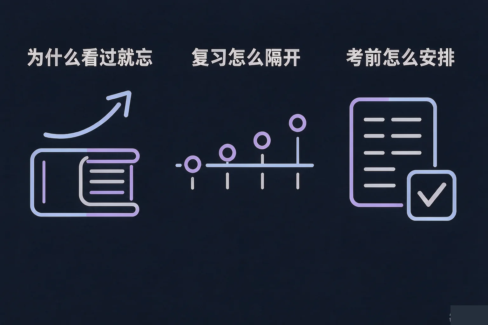
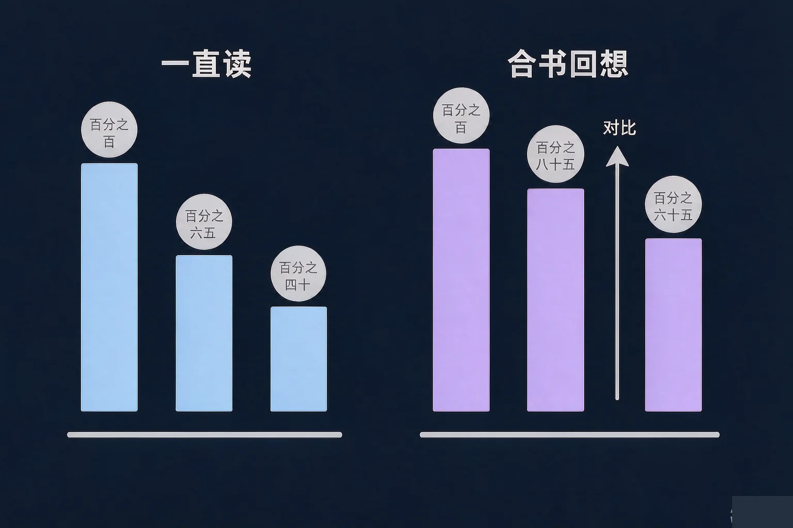
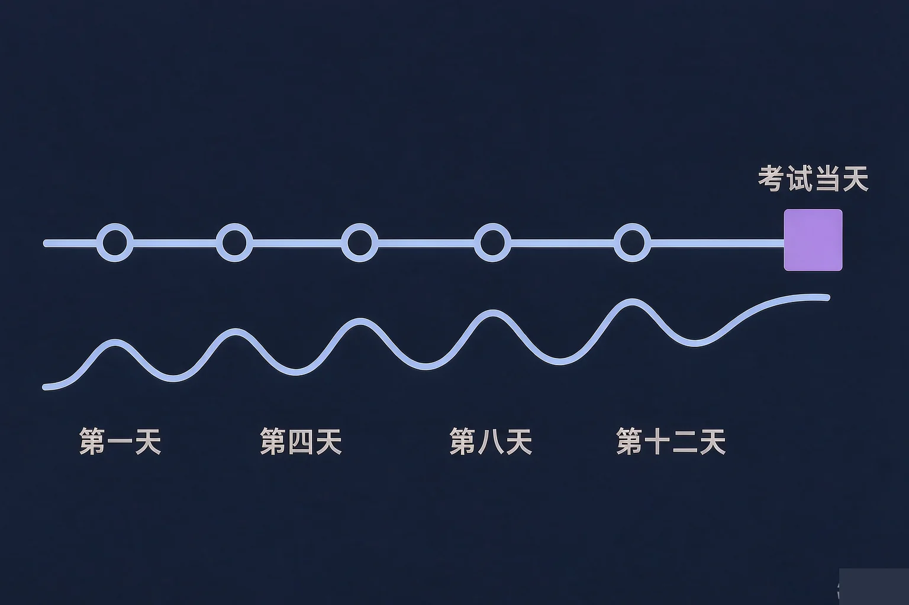

Gallery
v1.0.0 · skill v7.22.0
高中高一 · 学习辅导
同一份笔记，我看了三遍还是想不起来，同桌看两遍就记住了——差别到底在哪里？

选一个最贴近你经历的困惑，后面的内容都会围着它展开。
选择或输入后，这节课会围绕你的问题展开。
先凭直觉选一个，选完立刻看到解释——错了也没关系，正好知道要重点听哪里。
1. 背一份单词表的时候，你的做法更接近哪一种？
遮住答案先回想，是让记忆被真正取出来一次。读和抄都比较像在看和写。错因提醒：很多同学误认为抄得越多记得越牢，常见错误是把手上动作的熟练，当成了脑子里的记住。
2. 如果两周后有一次单元测，你更愿意把复习放在什么时候？
隔开时间复习，每次回想都在重新加固记忆。全部挤在考前，记得快也掉得快。错因提醒：考前集中背当下感觉最熟，容易误认为这就是最扎实的安排。
3. 考试时遇到一道暂时想不起来的题，比较稳的做法是：
先做会的，能让你稳住节奏，也让大脑在后台继续找那条线索。错因提醒：常见错误是把一道题卡住当成整场考试失控——其实节奏是可以自己安排的。
同一份笔记读三遍，会觉得越来越顺、越来越熟。但这份熟悉感，常常被我们当成了已经掌握。
反复阅读做了什么
它让内容变得好读、好认。当下很顺，但内容一直在书上，不在你脑子里被取出来过。
合上书回想做了什么
它逼你把内容从记忆里取出来一次。过程有点费劲，但正是这份费劲在加固记忆。
把「看得很顺」误认为「已经记住」，是这一课最高频的易错点。判断标准很简单：合上书，能不能说出来。

🔍 深层理解 换个角度再看一遍这件事，看看能不能说出背后的原理。
看见它：翻书复习时，眼睛在动、手在划，看起来一直在学；合上书回想时，那份安静反而让人心虚。
解释它：回想时需要费力搜索，这个搜索的过程正是记忆被重新加固的时刻；只读不取，记忆始终停在原地。
迁移它：同样的道理也适用于体育动作和乐器练习——只看教学视频永远学不会，得自己上一次场。
先选一种内容，再比较三种复习方式在一周之后各自留下多少。数值是示意量级，看的是差距。
横轴是考试后的天数，纵轴是还能回想出来的比例。折线往上抬的位置，就是做过回想复习的那几天。
一天连看四小时，和分四天各看一小时，总时长完全一样，一周后的结果通常差很多。

🔍 深层理解 换个角度再看一遍这件事，看看能不能说出背后的原理。
拆开它：一次复习里其实有两件事：先费力把内容取出来，再对答案修正。两件都做，才是完整的一次。
比较它：集中复习赢在当天的手感，分散复习赢在两周后的结果——看你更在意哪个时间点。
选一种复习节奏，看看这十四天里记忆保持的曲线，以及考试当天它落在哪里。
情境：小林有两周准备单元测，内容四小节，每天能拿出四十分钟，希望别再出现「看过就忘」。
不少人把「第 2 天先回想第一节」当成浪费时间，误认为应该先把新课全部学完再统一复习。结果是四节内容全挤在最后两天，间隔没被利用上。真正省力的做法是边学边回想。
先凭直觉选一个，选完立刻看到解释——错了也没关系，正好知道要重点听哪里。
1. 下面哪种做法，更能让你在一周后还记得住这份内容？
回想再对答案，让内容被真正取出来一次。划线和重读都停留在「看」这一层。错因提醒：把看着眼熟当成已经记住，是这一课最常见的误认为。
2. 同样是四小时复习时间，下面哪种安排通常记得更牢？
总时长一样时，间隔着复习效果更稳，因为每次回想都发生在记忆变淡之后。错因提醒：容易误认为一口气学完最扎实，其实是当下的手感最好而已。
3. 错题本怎么用，对提高分数最有帮助？
错题的价值在于重做时暴露卡点。抄答案和翻一翻，都是在看别人怎么解。错因提醒：常见错误是把错题本当收藏夹，记下来了却没有再取出来过。
拖动三个滑块，生成一份你可以照着做的排程建议，然后想一想哪几天需要留余地。
写下来，说给自己听：
这份表里哪一天最容易被打断？你打算怎么给它留出余地？
先凭直觉选一个，选完立刻看到解释——错了也没关系，正好知道要重点听哪里。
1. 早读时有二十分钟背一篇文言文，下面哪种安排更划算？
读加回想各占一半，比全程朗读多了一次真正的取出。朗读流畅只说明读得顺。
2. 距离期末还有三周，最合理的做法是：
前松后紧会让大量内容挤在没有间隔的几天里；每天通读则缺少回想，容易留下熟悉的错觉。错因提醒：通读三周看着很努力，但常见错误正是用阅读时间替代了回想时间。
3. 考场上发现有一题完全没思路，比较合适的是：
跳过再回来，能保住整体节奏，也让大脑在后台继续找线索。整场考试的节奏是可以自己安排的。
回到开头那个对比：你和同桌的差别，多半不在记性，而在复习的方式。方式是可以换的，节奏也是可以自己排的。
给别人讲一遍：请用「回想、间隔、薄弱清单」这三个词，说清楚你打算怎么准备下一次测验。
三层练习，做完第一、二层就算通关；第三层留给愿意继续探索的同学。
⭐ 基础巩固（必做）
⭐⭐ 能力应用（必做）
⭐⭐⭐ 迁移挑战（选做）
左边是学它之前要先会的，右边是学会之后可以继续探索的，下面是同一领域的伙伴知识。
图谱正在加载：首次进入需下载知识索引（约 1–3 秒），加载完成后本行会自动消失。